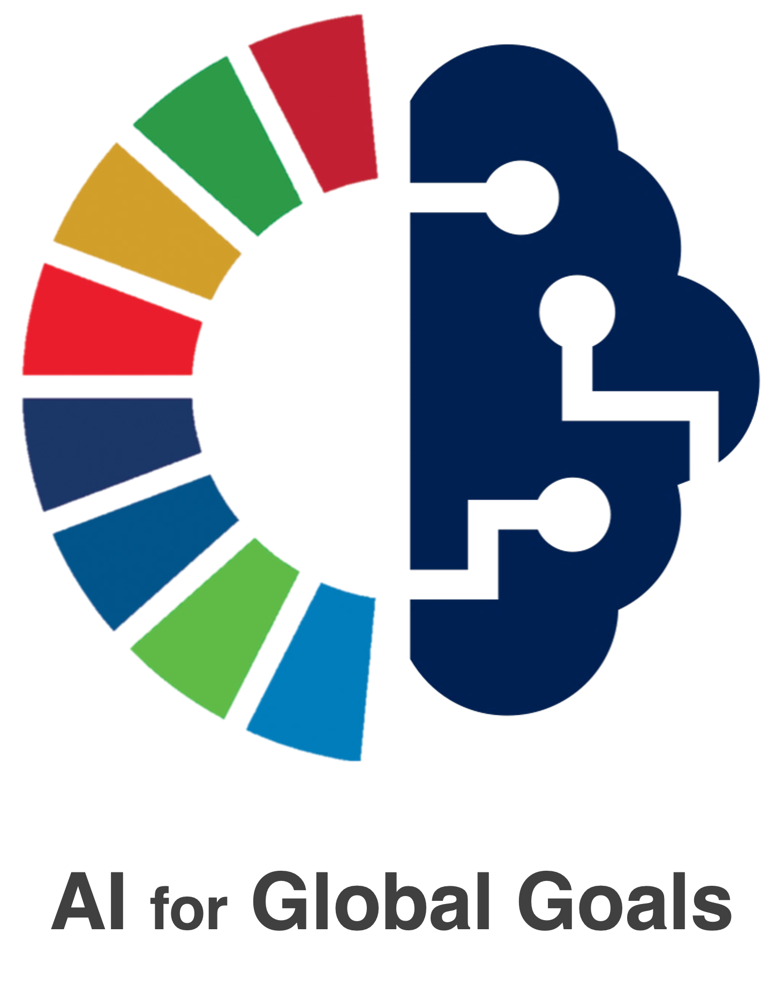
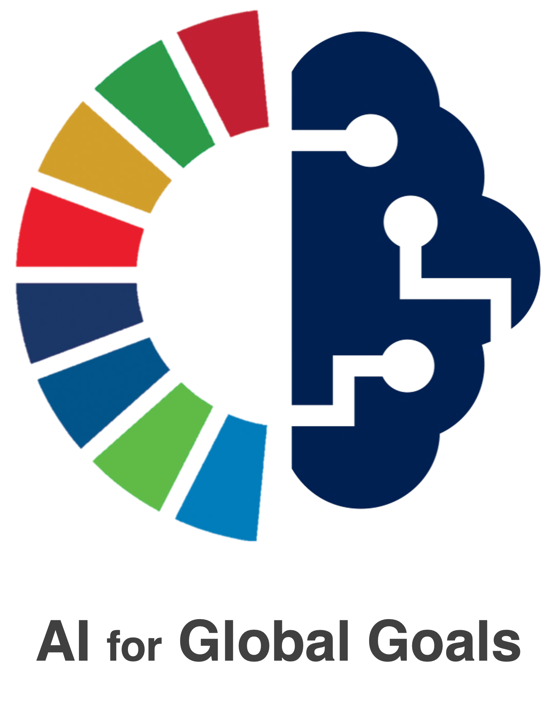

Welcome to the MLNCP Workshop at NeurIPS 2023!
This workshop aims to bring together ML researchers with academic and industrial researchers building novel AI accelerators.
The goal is to enable interaction between the two groups and kick-start a new feedback cycle between models and accelerators and to enable hardware-model co-design.
We welcome relevant algorithmic or model-innovations as well as results demonstrated on accelerators in the following categories:
- photonic or optical compute
- neuromorphic compute
- in-memory compute
- low-precision and edge-compute
- analog compute
- biologically-plausible machine-learning
The workshop will be held on December 16th, 2023 as part of the NeurIPS conference in New Orleans, Louisiana.
Abstract
As GPU computing comes closer to a plateau in terms of efficiency and cost due
to Moore' s law reaching its limit, there is a growing need to explore alternative
computing paradigms, such as (opto-)analog, neuromorphic, and low-power computing. This NeurIPS workshop aims to unite researchers from machine learning
and alternative computation fields to establish a new hardware-ML feedback loop.
By co-designing models with specialized accelerators, we can leverage the benefits
of increased throughput or lower per-flop power consumption. Novel devices hold
the potential to further accelerate standard deep learning or even enable efficient inference and training of hitherto compute-constrained model classes. However, new
compute paradigms typically present challenges such as intrinsic noise, restricted
sets of compute operations, or limited bit-depth, and thus require model-hardware
co-design. This workshop's goal is to foster cross-disciplinary collaboration to
capitalize on the opportunities offered by emerging AI accelerators.
Call for Papers
The 2023 Workshop on ML with New Compute Paradigms is calling for
papers on machine-learning models and algorithms that enable training
or inference on novel AI accelerators. Potential areas of interest include:
- Performance analysis of algorithms and models on future or current hardware.
- New or existing model paradigms (e.g. spiking networks or other neuromorphic models, energy-based models, or others) that map well onto AI accelerators currently in development.
- Strategies for inference or training on such new hardware. This includes new training algorithms or approaches to enable inference of pretrained models.
- Strategies for dealing with precision issues and hardware-induced noise in analog machine learning.
Submission deadline (extended): Anywhere on earth (AoE), 6th October 2023
Accept/Reject Decision (extended): Anywhere on earth (AoE), 27th October 2023
→ Submission link ←
Best paper award: The best paper will be recognized!
Submissions that discuss work-in-progress, unanswered questions, and challenges for new AI accelerator hardware are also welcome.
Guidelines for submission
- Please submit without author information (anonymous authors), as review at NeurIPS is double blind.
- Submissions should be no more than 6 pages long, excluding references and supplementary material. Supplementary materials should only be used for details; the paper should be self-contained.
- Please use the workshop template: mlncp_2023.sty
Important note:
Authors do not forfeit the right to publish elsewhere.
All accepted works will be made available on the workshop website.
However, authors retain full copyright of their work and are free to publish their
extended work in another journal or conference. We allow submission of works that
overlap with papers that are under review or have been recently published in a
conference or a journal, including science journals. Cross-submissions to multiple workshops at NeurIPS
are not accepted.
Schedule 16th Dec 2023
Warning: The schedule below is preliminary!
Morning Session:
- 09:00 - 09:10: Opening remarks (10 min)
- 09:10 - 09:30: Prof Peter McMahon (15 min) + 5 min Q&A
- 09:30 - 09:40: Contributed Talk I (8 min) + 2 min Q&A
- 09:40 - 09:50: Contributed Talk II (8 min) + 2 min Q&A
- 09:50 - 10:10: Prof Jesús del Alamo (15 min) + 5 min Q&A
- 10:10 - 10:25: Break (15 min)
- 10:25 - 10:35: Contributed Talk III (8 min) + 2 min Q&A
- 10:35 - 10:45: Contributed Talk IV (8 min) + 2 min Q&A
- 10:45 - 11:05: Prof Julie Grollier (15 min) + 5 min Q&A
- 11:05 - 11:25: Prof Ruqi Zhang (15 min) + 5 min Q&A
Poster Session and Lunch Break:
- 11:25 - 00:30: Poster session I (1 hour)
- 00:30 - 13:30: Poster session I
Afternoon Session:
- 01:30 - 01:50: Prof Mihaela van der Schaar (15 min) + 5 min Q&A
- 01:50 - 02:00: Contributed Talk V (8 min) + 2 min Q&A
- 02:00 - 02:10: Contributed Talk VI (8 min) + 2 min Q&A
- 02:10 - 02:30: Dr Kailash Gopalakrishnan (15 min) + 5 min Q&A
- 02:30 - 04:00: Poster session II and Coffee Break (1.5 hours)
- 04:00 - 05:00: Panel discussion (1 hour)
Organisers
The workshop is organised by the following people:
- Jannes Gladrow (Microsoft Research)
- Benjamin Scellier (Rain.ai)
- Eric Xing (Carneggie Mellon, Mohamed bin Zayed University of Artificial Intelligence)
- Babak Rahmani (Microsoft Research)
- Francesca Parmigiani (Microsoft Research)
- Paul R. Prucnal (Princeton University)
- Cheng Zhang (Microsoft Research)


 
